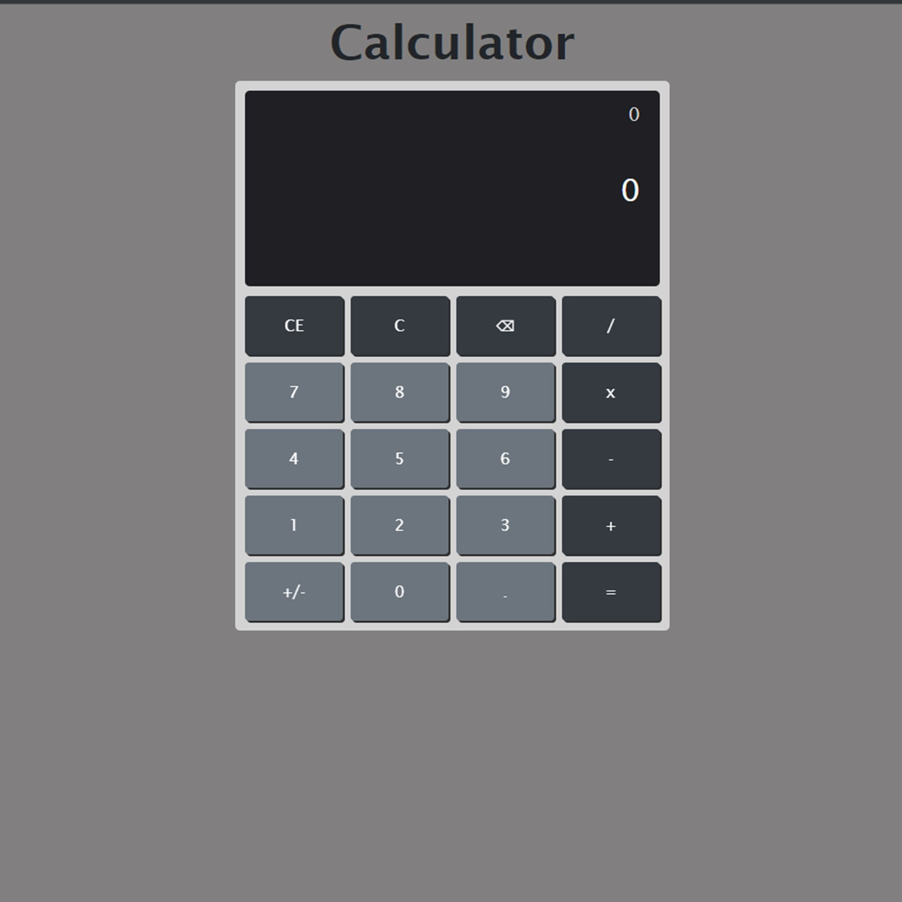
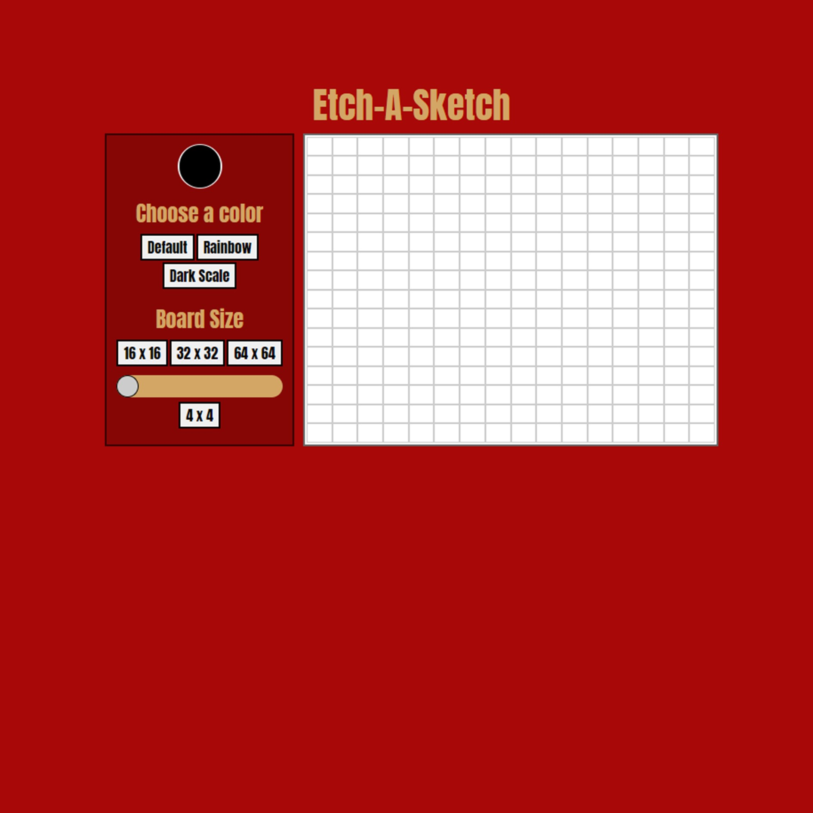
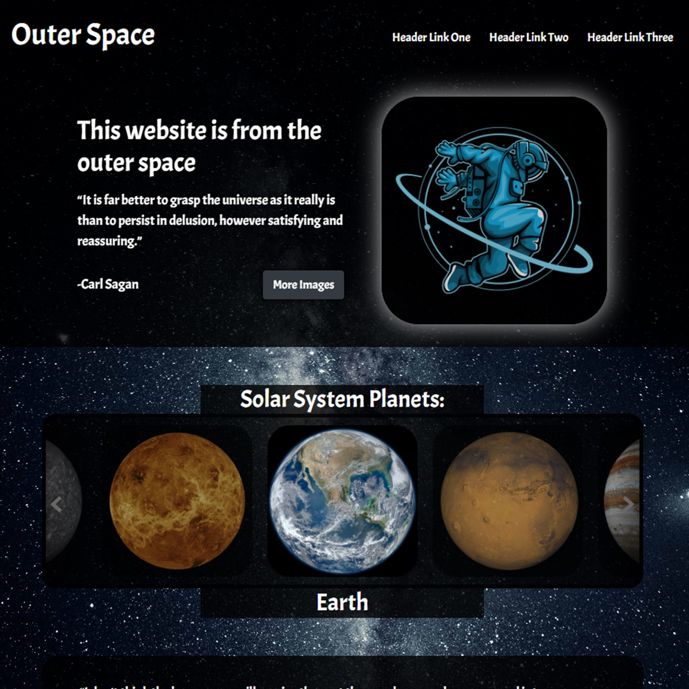
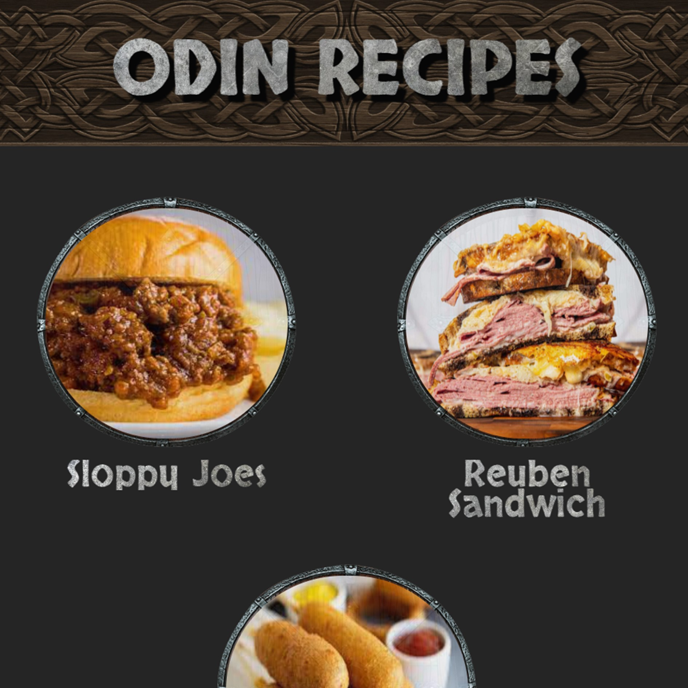
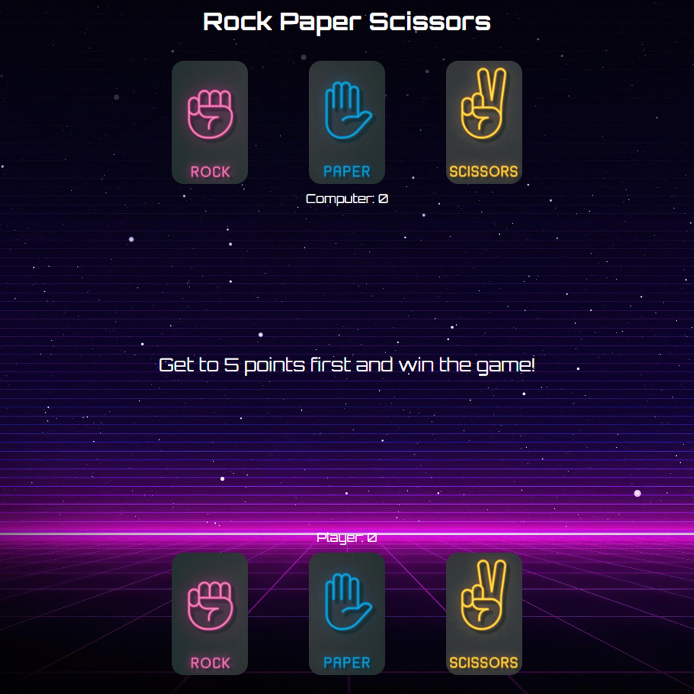
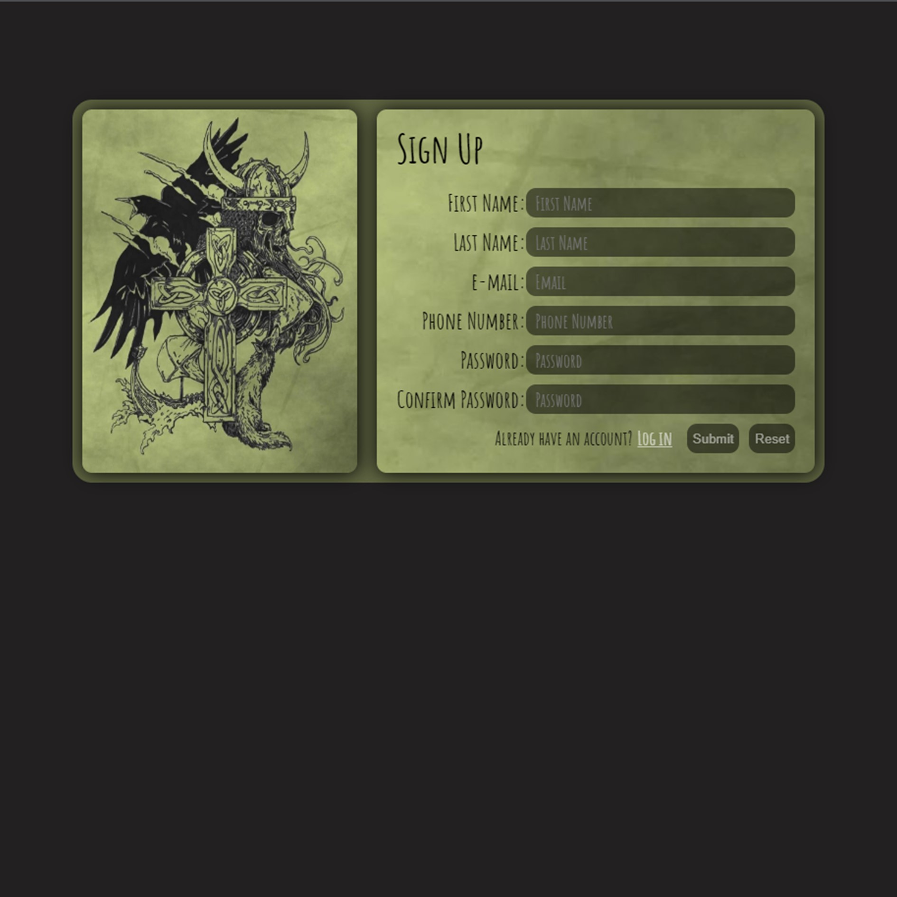

Calculator
On-screen calculator using JavaScript, HTML, and CSS. The calculator add, subtract, multiply and divide. The project general design was based on windows native calculator.
Etch-A-Sketch
Browser version of something between a sketchpad and an Etch-A-Sketch. The grid div's where made using JavaScript. To draw on the grid, left click inside, when you're done left click again.
Landing Page
Landing page designed following a given design for inspiration. Simple page with carousel to show all the planets on our solar system.
Recipes
Basic recipe page. An index page where is possible to click the recipe you want to see. When clicked the link will redirect to the recipe's description page.
Rock Paper Scissor
Browser version of the classic "Rock Paper Scissor". The game was made using JavaScript to determinate the game logics. It's a best of 5 game against the computer
Sign Up Form
Sign Up page with front end validations, the validations where made utilizing the HTML on most cases. The check if password and password confirmation match, was made using some JavaScript.